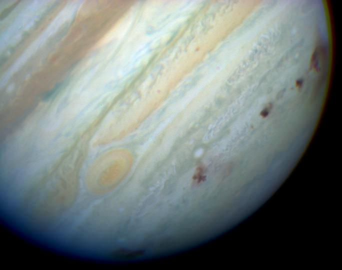
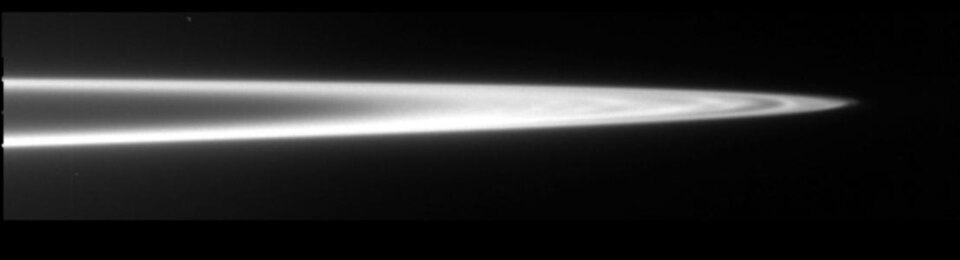

Jupiter, seen by NASA's Hubble Space Telescope
Jupiter is the largest planet in the Solar System and fifth from the Sun.
It is named after the king of gods and god of the sky in Roman mythology, analogous to Zeus in Greek mythology.
It is one of two gas giants and is composed of hydrogen and helium, with trace amounts of methane, ammonia, ethane and water.
Its most recognisable feature is the massive Great Red Spot - a long-lasting storm in the atmosphere of Jupiter that has lasted for hundreds of years.
It also has a faint ring system and at least 97 moons.
The four main ones are Ganymede, Callisto, Io, and Europa, first discoverd by Galileo in 1610.
They are refered to as Galilean moons and are some of the largest and most unique bodies in the Solar System.
Several spacecraft have explored the Jupiter system, including Pioneer 10 and 11, Voyager 1 and 2, and New Horizons, which also used the planet’s gravity to accelerate towards the outer Solar System.
NASA’s Juno is an ongoing mission that is the second after Galileo to orbit the planet.
It continues to study Jupiter’s atmosphere, deep structure, and magnetosphere.
ESA's JUICE and NASA's Europa Clipper are on their way to Jupiter and its satellites Ganymede, Callisto and Europa.
A future mission is CNSA's Tianwen-4, which is planned to launch in 2035.
Jupiter is named after the Roman god Jupiter, king of gods and sky father.
In Greek, the planet is named after Zeus (Ζεύς), the greek equivalent of Jupiter.
It's original name in ancient Greece was Phaeton (Φαέθων, "shining one").
In Chinese, Japanese and neighboring countries the planet is refered to as "wood star" (木星).
In Vedic astrology, the planet is named after Brihaspati (बृहस्पति), the "guru of devas" or teacher of gods.

Timelapse of Jupiter over a month
Orbit and rotation
Jupiter has a semi-major axis of 5.2 AU and is the fifthe planet from the Sun, with an orbit ranging from 4.95 AU at perihelion and 5.46 AU at aphelion.
It takes 11.86 Earth years to complete one orbit.
The orbital plane of Jupiter is inclined 1.30° relative to the ecliptic and has an eccentricity of 0.049.
Jupiter's axial tilt is low, at only 3.13°.
Jupiter exhibits the fastest rotation of any planet in the Solar System, completing a rotation in about 10 hours on average.
This rapid spin results in a significant equatorial flattening of 6.8%, second only to that of Saturn.
Just like other giants, Jupiter displays a differential rotation.
The polar regions rotate 5 minutes slower than the equator.
Main article: Trojans
A large group of asteroids co-orbits with Jupiter, known as trojans.
These asteroids are divided into two groups: the Greek camp, clustered around the leading Lagrange point (L4), and the Trojan camp, around the trailing Lagrange point (L5).
As of August 2025, there are 15,283 trojan asteroids according to the Minor Planet Center.
The Greek camp contains 9,691 known trojans, with the largest being 624 Hektor, 911 Agamemnon, and 588 Achilles.
The Trojan camp, meanwhile, includes 5,592 known asteroids, with the most prominent being the binary 617 Patroclus-Menoetius, 3451 Mentor, and 3317 Paris.
Other planets, with the exception of Mercury also have their own co-orbiting minor planets.
They are also refered to as trojans after the Jovian ones.
However, these planets have considerably less trojans than Jupiter.
Earth, for example, has two known trojans - 2010 TK7 and 2020 XL5.

Dark spots on Jupiter left by the impact of Comet Shoemaker-Levy 9
Beyond the trojans, Jupiter’s gravitational influence extends to other asteroid populations.
The Hilda asteroids, named after 153 Hilda, occupy orbits outside the main asteroid belt but within Jupiter’s orbits.
Their aphelia align with either of Jupiter’s L3, L4, and L5 Lagrange points and are in a 3:2 orbital resonance with the planet.
Additionally, Jupiter’s gravity shapes the distribution and dynamics of the main asteroid belt, clearing certain orbital resonances, creating the so-called Kirkwood gaps, and shepherding asteroid families into stable zones.
There are still asteroid population within the gaps like the Alinda and Griqua groups.
Apart from influencing the orbits of asteroids, Jupiter also interacts with comets, most notably the Jupiter family.
They are defined as short-period comets that have a semi-major axis smaller than Jupiter's.
Members of the Jupiter family are thought to have formed in the Kuiper belt outside the orbit of Neptune.
During close encounters with Jupiter, they are perturbed into orbits with a smaller period.
Occasionally, some comets are pertrubed into even more eccentric comets, and sometimes even hyperbolic ones.
Others get destroyed, like Shoemaker-Levy 9.
Size and mass
Jupiter is the largest planet in the Solar System.
It has a mean diameter of 139,822 kilometers, or 10.9 times that of Earth and roughly one-tenth the diameter of the Sun.
Jupiter’s mass is 2.5 times greater than the combined mass of all other planets in the Solar System, exerting a gravitational influence that shapes the orbits of asteroids and comets.
Gas giant exoplanets are similar to Jupiter in size and composition and are therefore refered to as "Jupiters".
Among these, “hot Jupiters” are a distinct class of gas giants that orbit very close to their host stars, typically with orbital periods of just a few days.
Notable examples include Dimidium (51 Pegasi b), WASP-12b, HD 209458 b, and Banksia (WASP-19b).
Jupiter’s composition is dominated by hydrogen and helium, mirroring the primordial mix of the early Solar System.
Trace amounts of ammonia, methane, and water are also present.
In its outer layers, helium constitutes about 10% of the volume but contributes roughly a quarter of the planet’s total mass.
Beneath the gaseous outer layers, increasing pressure and temperature transform hydrogen into a metallic state, forming a thick mantle of metallic hydrogen.
This electrically conductive layer is responsible for Jupiter’s powerful magnetosphere, the strongest of any planet in the Solar System.
Data from NASA’s Juno mission has revealed that Jupiter’s core is large and partially dissolved, with heavy elements possibly mixed into the surrounding metallic hydrogen.
This finding challenges earlier models that assumed a small and compact core, or even no core at all.

The Great Red Spot, image captured by Juno
Jupiter has a turbulent and ever-changing atmosphere full of storms, clouds and differently colored bands.
The clouds at the top layers are likely composed of crystalline ammonia, while the middle layer is likely made of ammonium hydrosulfide crystals, and the innermost layer may be made of water ice and vapor.
The colorful stripes of alterating light zones and dark belts on Jupiter are quickly spinning streams of clouds.
The exact chemical compounds responsible for the red, white, and yellow hues of these bands and storms remain uncertain, though candidates include phosphorus, sulfur, and complex hydrocarbons.
Storms on Jupiter are massive, long-lived vortices.
The most famous is the Great Red Spot, a persistent anticyclonic storm located 22° south of the equator.
Observed continuously since at least 1831, this storm has persisted for over 190 years, though it has gradually shrunk in size over time.
Other notable features include a series of "pearls” - massive, counterclockwise-rotating white ovals in the southern hemisphere.
Since 1986, the ovals have varied in number from six to nine.
Others are the circumpolar cyclones, observed by the Juno orbiter.
Jupiter boasts the most powerful and extensive magnetosphere of any planet in the Solar System with a dipole moment of 4.170 gauss.
It is generated by the motion of metallic hydrogen deep within its interior.
This magnetic field extends millions of kilometers into space, creating a vast region of charged particles that interacts with the solar wind and traps radiation in intense belts.
The magnetosphere is so large that, if visible to the naked eye, it would appear several times the size of the Moon from Earth.
It accelerates particles to near-light speeds, producing auroras at the planet’s poles and influencing the environments of its moons.
Most notably, Io's volcanic activity feeds a torus of sulfur dioxide along its orbit.
The gas is ionized in Jupiter's magnetosphere, producing sulfur and oxygen ions, which, together with hydrogen ions, form a plasma sheet.
The plasma causes deformation of the dipole magnetic field into that of a magnetodisk.

Main ring of Jupiter, captured by Galileo
Jupiter has a faint planetary ring system composed of three main segments: an inner "halo", a relatively bright main ring and outer faint rings, refered to as "gossamer" rings.
These rings appear to be made of mostly dust particles, likely from micrometeoroid impacts on its moons, similar to the rings of Neptune.
The main ring is shaped and maintained by the gravitational influence of the satellites Metis and Adrastea, while the outer ones are shaped by Amalthea and Thebe.
Main article: Satellites of Jupiter
Jupiter has four gravitationally rounded moons - Ganymede, Callisto, Io, and Europa.
They were discovered by Galileo Galilei in 1610 and are called Galilean moons.
Ganymede is the largest known satellite in the Solar system and is bigger than the planet Mercury.
All but Europa are larger than Earth's Moon.
Io, Europa and Ganymede are in a 4:2:1 orbital resonance with each other.
93 other moons are known to orbit Jupiter.
Just like the four Galilean moons, the rest are assigned names of lovers of Zeus (Greek equivalent of Jupiter), with newer moons receiving those of their descendants.
They are significantly smaller than the Galilean moons and are not round.
The biggest of them is Amalthea, and the most massive is Himalia.

Ganymede
Main article: Ganymede
Ganymede is the largest known satellite in the Solar System.
It is larger than the planet Mercury, but is less massive.
The Hubble Space Telescope has discovered evidence for underground saltwater ocean, which is possibly the largest of any planetary-mass object.
It has a magnetic field, the only satellite known to have such.
The magnetic field is likely affected by the interior ocean.
The ongoing ESA mission JUICE is planned to orbit Ganymede and study the satellite.

Callisto
Main article: Callisto
Callisto is the second biggest of the Galilean moons.
The surface is heavily cratered, covered with craters and white icy spots.
The Galileo spacecraft has gathered data from Callisto that shows the possibility of an interior ocean.

Io
Main article: Io
Io is a satellite of Jupiter that is slightly larger than Earth's Moon.
It is volcanically active and has hundreds of volcanoes.
The activity of Io is caused by the gravitational pull of Jupiter on one side and Ganymede and Europa on the other side.
Together these three satellites are in a orbital resonance with each other.
Volcano eruptions can be so powerful that Earth telescopes can see them.

Europa
Main article: Europa
Europa is the smallest Galilean moon and is slightly smaller than Earth's Moon.
It is an icy moon with a smooth surface full of dark streaks.
It is speculated that Europa could have a subsurface ocean where extraterrestrial life could exist.
This is similar to Ganymede and Callisto, but there are more evidences showing such ocean on Europa than on the other two moons.
A similar satellite is Saturn's moon Enceladus.
The orbiter Europa Clipper by NASA that was launched in 2024 is planned to study the Europan surface.
There are four satellites that orbit closer to Jupiter than Io - Metis, Adrastea, Amalthea, and Thebe.
They have regular orbits, that are prograde and have a low eccentricity and inclination, just like the Galilean moons.
Metis and Adrastea maintain Jupiter's main ring, whereas Amalthea and Thebe maintain their own faint outer rings.
Jupiter has been known since ancient times, visible to the naked eye as the second-brightest planet in the night sky after Venus.
In 1610, Galileo Galilei made the first detailed observations of Jupiter, discovering its four largest moons, now known as the Galilean moons.
These moons were later named Io, Europa, Ganymede, and Callisto by the astronomer Simon Marius, who also discovered them independently.
In 1665, Giovanni Cassini became the first to document the planet’s atmospheric bands and storms.
Centuries later, in 1892, American astronomer E.E. Barnard discovered Amalthea, Jupiter’s fifth moon.
By the time of the Voyager 1 mission, eight more moons had been identified through ground-based observations.

Model of NASA's spacecraft Juno
Several spacecraft have visited Jupiter, including two orbiters.
Early missions, such as Pioneer 10 and 11, used Jupiter’s gravity to accelerate toward the outer Solar System, capturing the first close-up images of the planet.
Voyager 1 and 2 later revealed Jupiter’s rings, provided detailed views of the Galilean moons, and discovered additional satellites.
Missions like the Ulysses solar probe, Cassini-Huygens, and New Horizons all passed Jupiter on their way to their primary targets - the Sun (attaining a polar orbit), Saturn, and Pluto respectively.
Five of the missions achieved the needed velocity to leave the Solar System, those being the two Pioneer and Voyager probes, and New Horizons.
NASA’s Galileo mission became the first spacecraft to orbit Jupiter, studying the planet and its moons for seven years before its intentional deorbit.
Galileo released an atmospheric probe, analyzed the composition of Jupiter’s atmosphere, and observed the dramatic impact of comet Shoemaker-Levy 9.
The Juno mission, currently extended until 2025, is the successor to the Galileo orbiter and continues to investigate Jupiter’s atmosphere, deep structure, and magnetosphere.
It is the second New Frontiers mission after New Horizons.
The extended mission has already ended, though Juno is still operational.
It will eventually meet the same fate as Galileo.
There are several upcoming missions, mostly focused on Jupiter's moons.
ESA’s Jupiter Icy Moons Explorer (JUICE), launched in 2023, will perform several flybys of Europa, Ganymede, and Callisto before entering orbit around Ganymede.
NASA’s Europa Clipper, launched in 2024, is focused on Europa’s potential habitability, particularly its subsurface ocean.
China’s CNSA plans to launch Tianwen-4 in 2035 to study Jupiter’s magnetosphere, atmosphere, and either Ganymede or Callisto.
External links
{% include catplanets.html %}